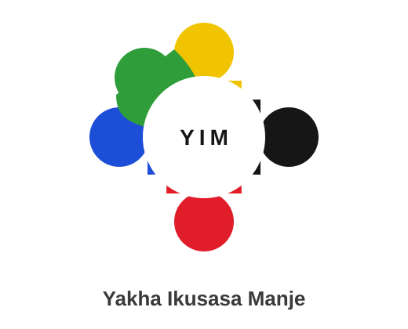
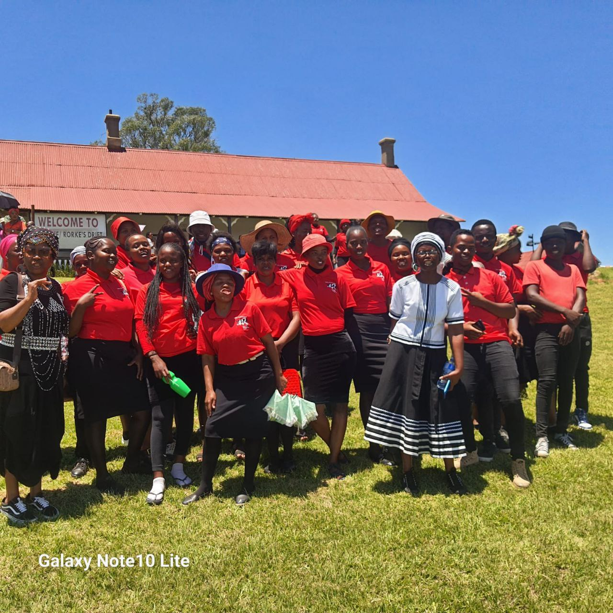
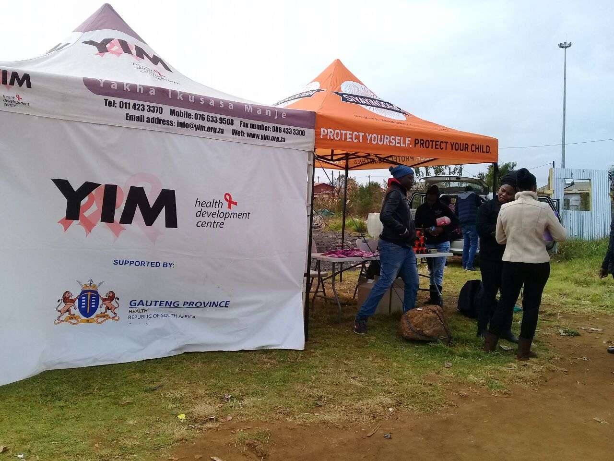
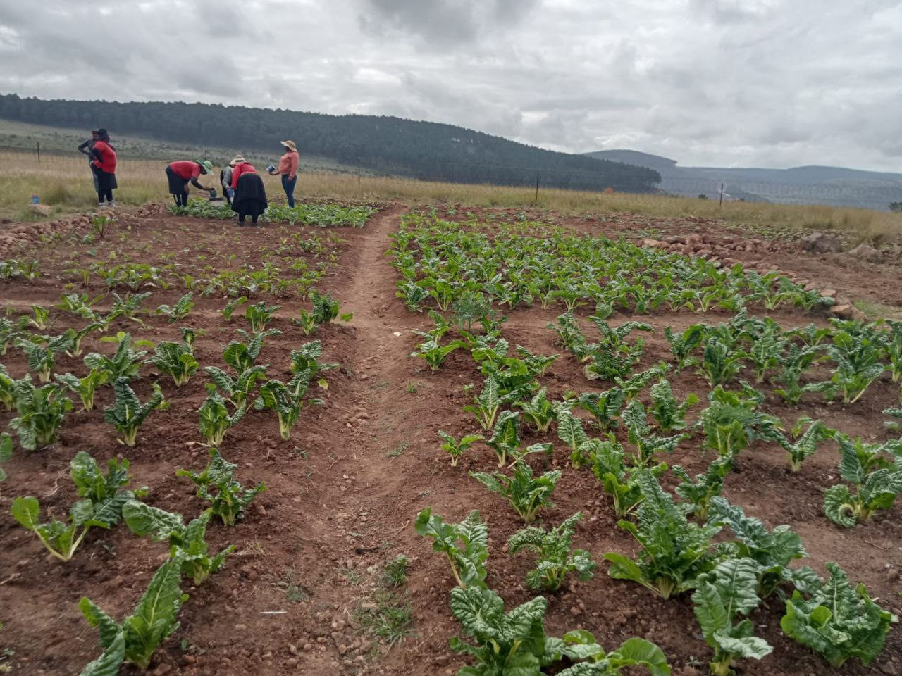
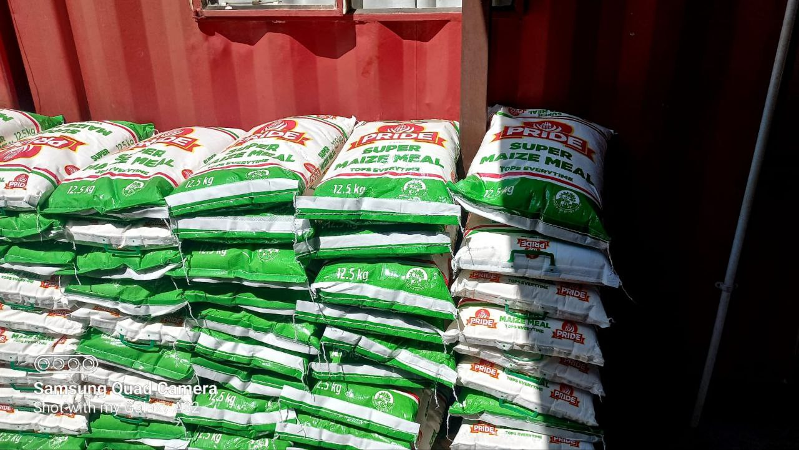
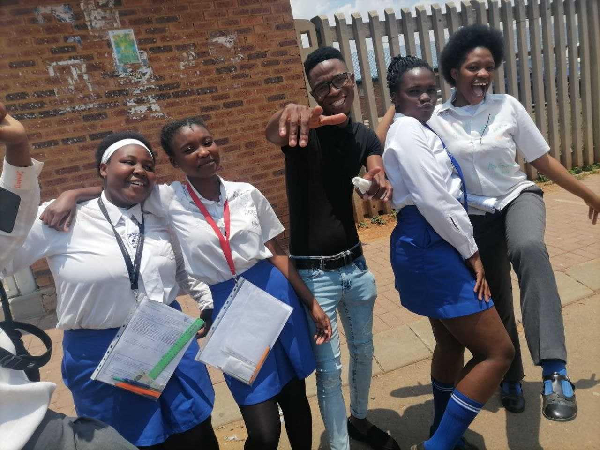

Education
4,500+ learners, 26 sites, 82 teaching assistants, 30 reading clubs. YIM Education began in 2017.
NPO 044-732 · PBO 9565369197 · Since 2004
Yakha Ikusasa Manje works with children, youth, women and households in Gauteng, Mpumalanga and KwaZulu-Natal through after-school learning, HIV services, psychosocial support and food gardens.


After-school team, KwaZulu-Natal

Community health outreach

Food gardening, Mpumalanga

Household food support
From the director
The 2024–2025 financial year has been a period of growth, resilience, and transformation for YIM.
Director Hlobi Ngidi leads work that started in Kingsway and now runs in Ekurhuleni, Mkhondo, Amsterdam, Rorke’s Drift and KwaThandeka.

After-school and ECD work sits at the centre of the latest report.
From the 2024–2025 annual report.
4,500+ learners, 26 sites, 82 teaching assistants, 30 reading clubs. YIM Education began in 2017.
HIV testing, TB and STI screening, ART linkage and PrEP — with WITS RHI and the Department of Health.
Home visits, parcels, and IDC gardens with a solar borehole in KwaZulu-Natal.
NPO 044-732 · PBO 9565369197 · 850 Bheka Street, Kingsway, Benoni.